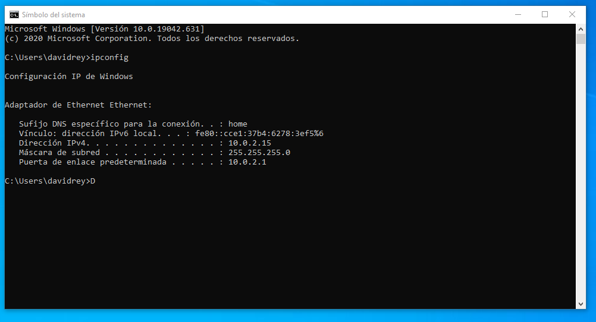
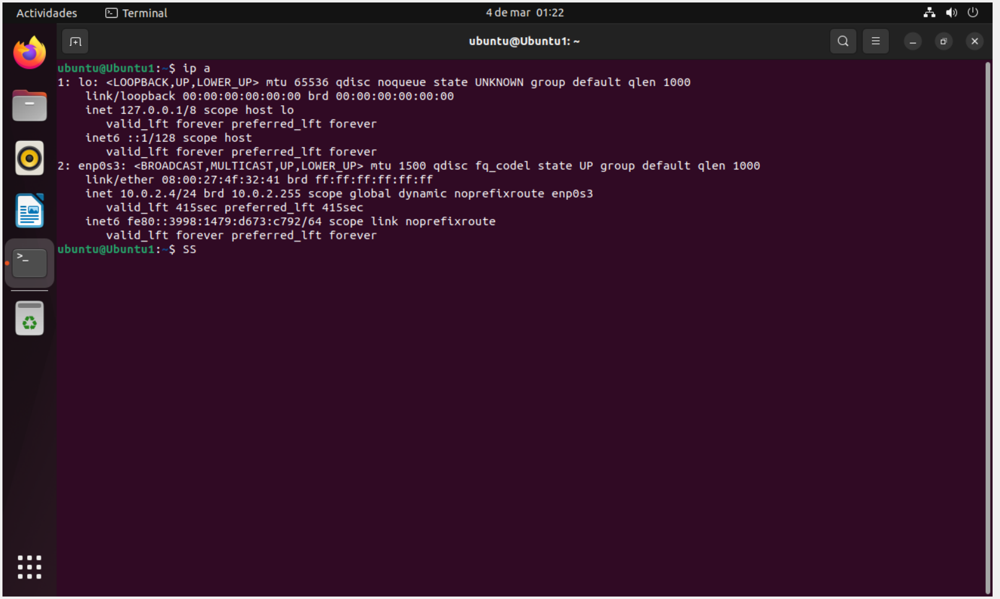
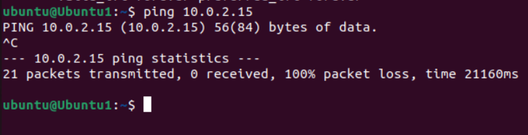

Antes de hacer esto, tenemos que comprobar la dirección IP y hacerle un PING
Vamos a ver cuál es la dirección IP del Windows, por lo que abrimos cmd y escribimos lo siguiente
Y ahora vamos a mirar la de Ubuntu en el terminal
Y ahora le hacemos PING con ambas máquinas
Vemos que el PING ha salido bien, por lo que podemos pasar al siguiente paso.
Vamos a instalar el sistema de transferencia de archivos en Ubuntu para que funcione con Windows.
Aquí te dejo un videotutorial donde te explico cómo se hace:
Y ya estaría, si hacemos la transferencia de Windows a Ubuntu y viceversa lo hemos hecho bien.
Espero que le haya servido.